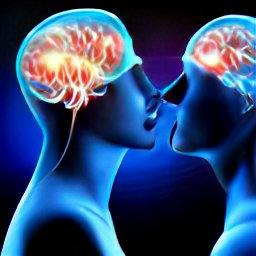

風呂敷理論と共鳴作用仮説と脳のバグ

(image generated by Craiyon. https://www.craiyon.com)
Joseph Burkes の講演をネタにしてタイトルの件を雑感として取り上げたのが下の記事。
手抜き
- 1:42:00-- - 互いに見知らぬ A と B がほぼ同時刻に同じような奇妙な現象を体験。A と B は Joseph Burkes のみが共通の接点。 - その現象とは… ・天井の火災報知器の周囲の奇妙な光景を A と B が全く別の場所でほぼ同時に目撃。 ・それは恒星系か銀河系のような光景で、ゆっくり回転して見えた ・この時点で A は失神 ・B はさらに馴染みの ET （グレイ型）の姿が見えた。右目だけから涙が出てきた。 - これは未知の知的存在が、互いに無関係な A と B に仮想体験注入を実演することで、その能力を私（Joseph Burkes）に見せつけたのだ。音声書写（自動生成）
▼展開
got together for reunion they went to Las Vegas they had a suite 1:39:45 on the ISIS hotel and and Joe had his room and in the suite and Richard had 1:39:54 had his and he then discussed a plan to write the book that evening while he was 1:40:02 in Las Vegas something very strange happened Richard is apparently an 1:40:07 experiencer because of the way he described the events although I have never debriefed him on what the 1:40:14 specifics were he looked up at the he was lying in bed it was late he looked at the light the smoke detector light 1:40:21 there had been blinking in this usual methodical you know all of a sudden the 1:40:28 light was extinguished and around it appeared a constellation of twinkling 1:40:33 star like objects that flickered on and on was like he described like a galaxy or solar system was swirling slowly 1:40:40 rotating the words he used was I couldn't handle it and I passed out he 1:40:48 didn't say he fell asleep passed out lost consciousness what has happened on Saturday night and 1:40:54 in July what he didn't know was that two hours before I was on the phone with 1:41:01 Sasha I'm in West LA and my overpriced real estate that I had to work two jobs to pay for in marvista Sasha's in his 1:41:09 apartment in the valley and I'm talking to Sasha and we're shooting the breeze talking about the next investigation all 1:41:16 of a sudden Sasha says oh my gosh on the ceiling there's these lights flickering 1:41:21 on and off on and off and I said yes what else he said it's like a galaxy 1:41:28 it's like solar system it's it's swirling around the ceiling it's three-dimensional it's like a hologram I 1:41:33 said yes and he says I'm tier I says he says I'm crying Joe I said why what do 1:41:40 you mean you're crying and he his command of English was limited he meant his I was tearing I said both eyes he 1:41:47 said no just my right eye it's tearing and then this constellation coalesced to 1:41:54 a three-dimensional image of an ET so called Zeta Reticuli one of Sasha's favorites you know big head big eyes 1:42:03 wraparound eyes even had a name for one of the beings that he imagined was his friend called him zan zan and Sasha said 1:42:15 that his right eye was tearing and I thought my gosh this guy's having an 1:42:20 omlette us play while I'm on the phone this is incredible I told him to close your right eye what 1:42:27 happens I can still see him Joe close both eyes he could still see the alleged 1:42:32 et image even though his eyes were closed I may have asked him even to put your hands in front of your eyes he 1:42:39 could still see it his eye was tearing because it seemed likely in my judgment 1:42:45 that the intelligence behind the phenomena was directing some form of energy that was irritating the I didn't 1:42:51 really hurt him I asked him does it hurt he says no but it was irritated and was 1:42:56 creating that image by beaming some energy through the occipital the retinal 1:43:01 nerve to the occipital lobes where the image 1:43:08 was being created for Sasha this was truly incredible the technology of 1:43:13 creating an encounter was unfolding before me and then several days later I 1:43:20 got a call from Richard and he described that event which had happened just two 1:43:25 hours later Oh Sasha and Richard don't travel in the same circles Richard's in Orange County Sasha's works in the 1:43:32 hospital with me I don't think it's possible that they could have conspired to carry out a hoax to fool Joe Berks 1:43:39 the only thing they had in common was they both knew me this was a display that was intended for me since I knew 1:43:47 both of them they did not know each other it was two yes we can do this this 1:43:53 intelligence can do this this is only I think the second or third time that I've 1:43:58 had the courage to to share this with a group because there is the virtual 1:44:04 experience three two I should say two and three and what a virtual experience講演動画(1:59:00)
Dr. Joseph Burkes (07-20-10) Secrets from the Contact Undergroundコメント1
- Joseph Burkes は ・未知の知的存在が、仮想体験注入の実演によって、その能力を私に見せつけた と解釈している。だが、私の見解は異なる。以下、この事件が Joseph Burkes の説明どおり真正なものであって、捏造の類ではないと仮定する。 - Synchronicity や遠隔視、予知、orb 召喚…といった不可解な現象（＝超常現象）のベースには共鳴作用が働いている（仮説）。この事件も A, B, Joseph Burkes の三者の間の共鳴作用によって生じたもの。 - 他にも以下のような事例は共鳴作用によって起きているのだろう。 Whitley Streiber : OBE 中の私の姿を複数の知人が目撃 (2021-12-10) Whitley Strieber : OBE 中の私の姿を他人が目撃した事例が 5度もある。（途中1） (2021-09-28)コメント2
- 従来の因果律を ・(a) 接触による力の伝達：歯車、テコ ・(b) 非接触による力の伝達：電磁力、重力 の (a) に喩えた場合、共鳴作用は b に喩えることができる。つまり、 ・(a) 因果関係（＝因果的に接触）によっておきる現象 ・(b) 共鳴関係（＝因果的に非接触）によっておきる現象 - この共鳴作用には脳のバグが寄与している。逆にいえば、脳に過大なストレスを与えつづけることで、脳をバグらせ（＝脳の一部を変質、誤動作させることで）共鳴作用をある程度までは誘発できる。 - それゆえに、稀には以下のようなことが起きる。 ・ストレスにさらされた青少年の周囲でポルターガイスト現象 ・過酷な召命体験を経てシャーマンとしての能力を獲得 ・過酷な宗教的な修行で霊的能力を獲得 ・限度を越えた瞑想修行によって霊的知識を獲得 ・限度を越えた瞑想修行によって大悟・解脱 ・abductee が ESP 能力を獲得 - これらは全て脳のバグが誘発した共鳴作用。つまりバグの副作用であり、どれも無用・無益なものだが宗教業界、精神世界では高い価値があると錯覚している。コメント3
- CIA の MK-Ultra は単なる洗脳実験にはとどまらず、 ・薬物や不眠・呼吸困難などの各種拷問を駆使して、被験者の脳を意図的に壊すことによってバグらせ、共鳴作用による ESP 能力を引き出そうとしたものだ と憶測することも不可能ではない (*1)。 - その場合、CIA の上層部は MK-Ultra の時点で既に UFO/ET の正体に気づいていたことになる。それを示唆するのが下の過去記事。 1973年10月18日、オハイオ州： UFO が軍用ヘリに衝突寸前、軍が OBE に関心（全体） (2013-05-17)(*1)
- そういえば…。 - 以前、Whitley Strieber が子供の時に空軍の実験材料にされた体験を証言していた。大勢の子供たちと一緒に狭い一室に閉じ込められ、窒息死寸前にまで追いやられた…と。 - 私は彼のこの証言は妄想の類だと判断しているが、ひょっとすると、実際にそれに似た危機的体験－－たとえば川や池で溺れた－－があって、その記憶が「空軍による虐待実験」にすり替わったのかも。 - その事件によって彼の脳に変質が生じ、後に彼の一連の abduction 事件が生じた…とか。蛇足
- 言うまでもないが、以上の仮説は憶測に憶測を重ねたものなので容易に瓦解しうる。それを覚悟の上で私は仮説を組み立てては壊し、組み立てては壊し…を繰り返している。 - なお、上記の共鳴作用の仮説は典型的な風呂敷理論になっている。風呂敷理論とは…・Whitley Strieber に限らないが、この手の精神世界のヨタ話にはある共通した特徴がある。それは全ての差異を無視し、何でもかんでも全て「万能の風呂敷」にぶち込み、包み込んだことにして世界の本質・根源はコレだ言い張る横着で傲慢な姿勢。 ・この場合、意識がその風呂敷になっている。全ては意識だ、宇宙は意識だ、全ては一つだ…これらが典型的な風呂敷理論。 ・禅の空や無にまつわるタワゴトも同じ型の風呂敷理論に基づいている。龍樹も『中論』で風呂敷理論を駆使していた。こういった連中が操る言葉（意識、無、空、本質、自性…）には中身がなく、曖昧な慣習的合意、漠然とした含意、象徴的な仄めかし…の類だけがある。その曖昧さを巧みに操って言葉の手品（*2）を繰り広げている。 ・ちなみに…。私の精神世界批判の手法も同じ風呂敷理論を借用している。風呂敷理論という風呂敷に精神世界のヨタ話も禅のタワゴトも一纏めにしてぶち込んでいるw ref: Whitley Strieber : 妻の魂から「意識が重力の基礎になっている」と教えられた。 (2021-06-10)(2022-04-27)
初出
Dr. Joseph Burkes : 私の知人の二人が別個に天井に回転する銀河系を目撃 → 未知の知的存在が私に仮想体験注入を実演して見せたのだ (2022-04-27)